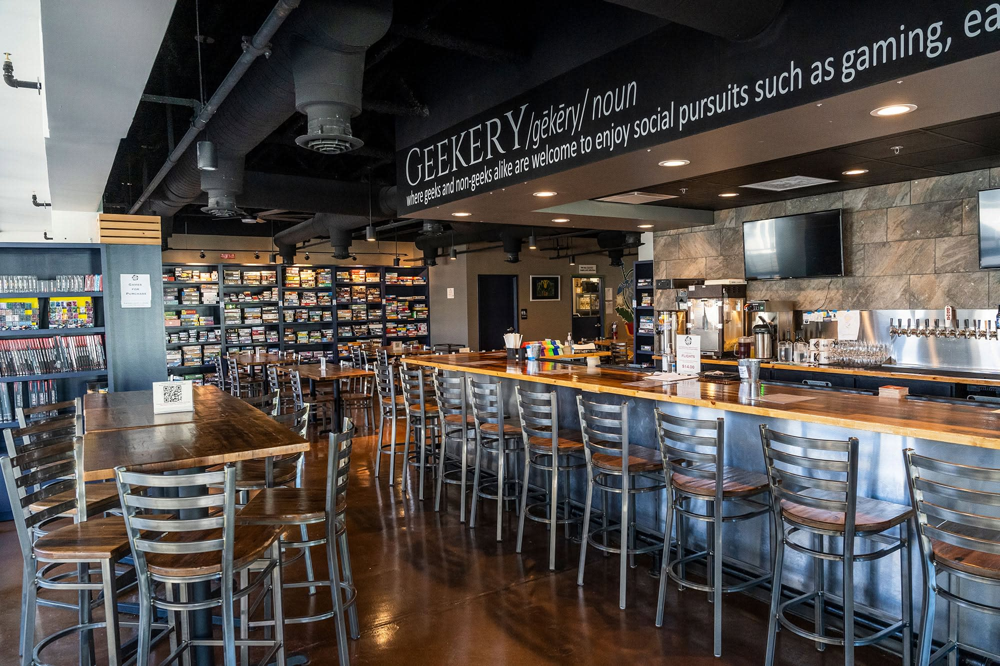

Cary has a lot to offer you, but if you prefer something more relaxed and fun, want to support a local business,
or just want to meet some new people with similar hobbies, the Geekery and Tavern is the place for you.
Here you can-
Geekery and Tavern is located at 107 Edinburgh S Dr #213, Cary, NC 27511. It costs $10 to reserve a table
and have access to their board games, but it's a low price considering it's only $10 a table, not person,
and you can stay as long as you like, and play as many of their games as you like. They have a variety of
food and drinks with names pulled from nerd culture such as their "Dragonball", a classic meatball sub
named after the popular anime of the same title. If you wish to learn more or a reserve a seat for yourself,
you can visit their website using the link below.